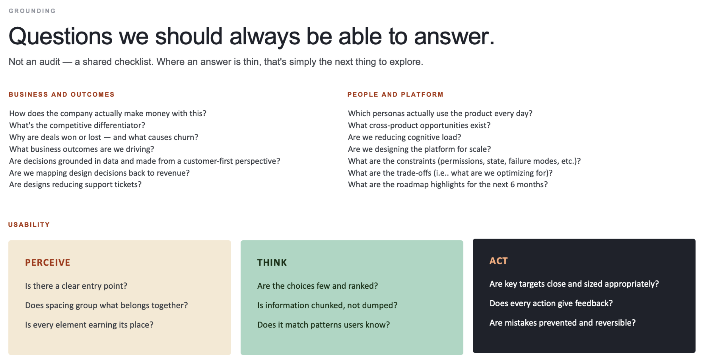

Product Designer Practice Exam
{{ t.label }} ({{ t.count }})
Flagged for review
{{ r.themeLabel }}
{{ r.question }}
{{ r.toggleLabel }}
{{ p }}
{{ r.core }}
{{ p }}
{{ item.n }}
{{ item.pre }}{{ item.em }} {{ item.post }}
•
{{ s.label }} {{ s.text }}
{{ r.closing }}

Nothing flagged — you're clear. Every question you passed through is settled.
← Back to questions
{{ nav.posLabel }}
{{ q.numLabel }}
{{ q.themeLabel }}
{{ q.typeLabel }}
{{ q.timerLabel }}
{{ q.question }}
{{ o.letter }}
{{ o.text }}
{{ o.mark }}
{{ q.startLabel }}
{{ q.revealBtnLabel }}
{{ q.flagLabel }}
What they're really probing for
{{ q.probing }}
Model answer
{{ q.answer }}
{{ q.core }}
{{ q.expandLabel }}
{{ f.text }}
{{ f.arrow }}
{{ n.n }}
{{ n.pre }}{{ n.em }} {{ n.post }}
•
{{ s.label }} {{ s.text }}
{{ q.closing }}
{{ s.label }}
{{ s.arrow }}
{{ q.spectrumNote }}
{{ q.bulletsLabel }}
{{ q.tableHeadA }}
{{ q.tableHeadB }}
{{ r.problem }}
{{ r.outcome }}
If you land it, expect the follow-up
← Previous
{{ nav.posLabel }}
{{ nav.nextLabel }}
Model answers draw on the deck's own framing — clarifying the objective, mapping the system, grounding decisions in evidence, prioritization, and higher-level pattern work — plus general Staff Product Designer interview craft. They're a strong starting point to react against, not a script to memorize.